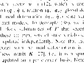

USAGE: binarize inimg outimg [-t THRESHOLD] [-i] [-a] [-L]
binarize applies a user-selected threshold to binarize
a gray-scale input image, setting pixel intensities
above the user-chosen threshold to ON
and those below the threshold to OFF
resulting in a binary output image.
ARGUMENTS:
inimg: input image
filename (TIF)
outimg: output image
filename (TIF)
OPTIONS:
-t THRESHOLD: gray value between 0 and 255 (or other maximum
intensity value); intensities above THRESHOLD are
set to ON, all others to OFF; default = 128.
-i: INVERT: intensities ABOVE (lighter) threshold set to 0
and those BELOW (darker) threshold set to 255
-a: Area of Interest Flag - will prompt for subimage to binarize
-L: print Software License for this module
Example:
binarize text.tif textT81.tif -t 81
text.tif:
textT81.tif:

Copyright (C) 1999 MLMSoftware Group, LLC.